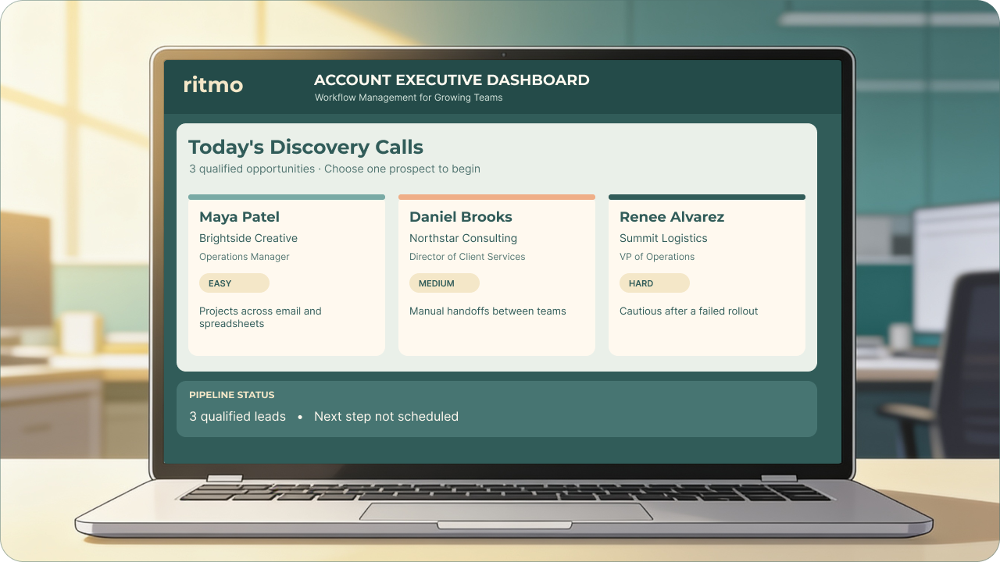

Centralized Work Management
Keep tasks, deadlines, project updates, and responsibilities organized in one shared workspace.
Why it matters: Teams spend less time searching through emails and spreadsheets to figure out what's happening.

Approved workstation image not yet bundled.
Workflow Management for Growing Teams
3 qualified opportunities · Choose one prospect to begin
3 qualified leads Next step not scheduled
Review your role and the Ritmo solution to unlock your discovery calls.
Before your discovery calls, get familiar with your role and the solution you're representing.
You're an account executive at Ritmo. You'll meet with qualified prospective customers to explore their needs, address concerns, and determine whether a follow-up demonstration is worth scheduling.
Ritmo is a B2B workflow-management software platform designed to help growing teams organize, coordinate, and track their work in one place.
Keep tasks, deadlines, project updates, and responsibilities organized in one shared workspace.
Why it matters: Teams spend less time searching through emails and spreadsheets to figure out what's happening.
Create consistent processes so everyone knows which steps to follow and what happens next.
Why it matters: Teams can reduce confusion, missed steps, and inconsistent ways of working.
Assign responsibilities as work progresses, helping teams coordinate handoffs without constantly following up manually.
Why it matters: Work is less likely to get stuck because someone doesn't know they're responsible for the next step.
An example explanation—not a script to memorize.
“Ritmo helps growing teams organize their work in one place. Instead of juggling spreadsheets, emails, and manual follow-ups, teams can track progress, coordinate responsibilities, and keep projects moving with clearer workflows.”
During your customer conversation:
Remember: You're not expected to close the sale during this call. Your goal is to determine whether a tailored Ritmo workflow demonstration is worth scheduling.
Your customer conversation is ready.
Prototype handoff · No live call is connectedPreparing your customer conversation